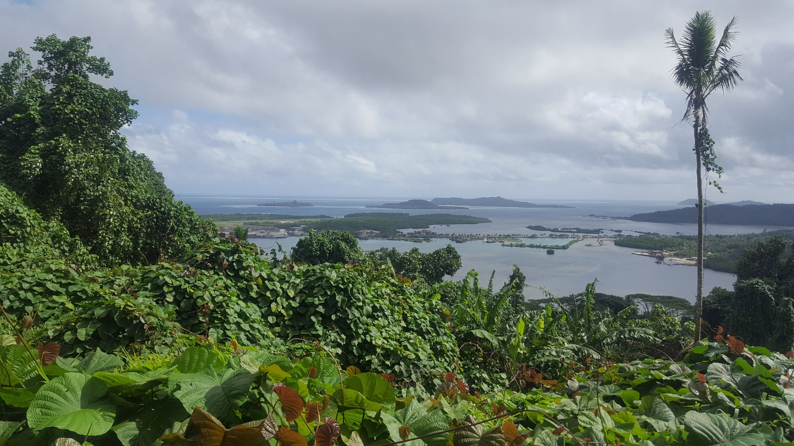
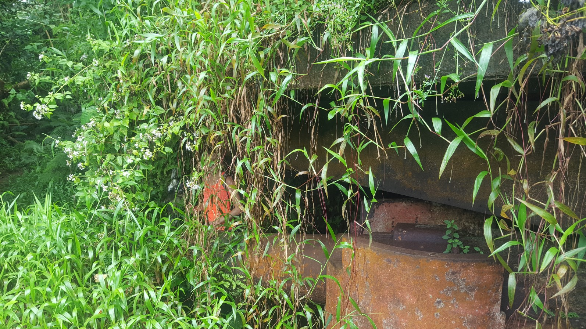
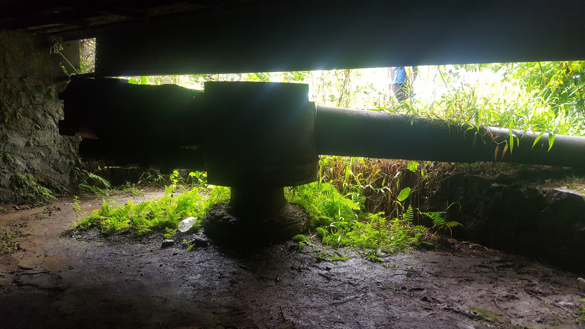
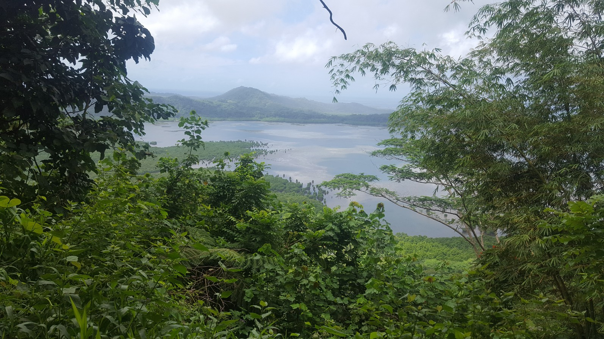
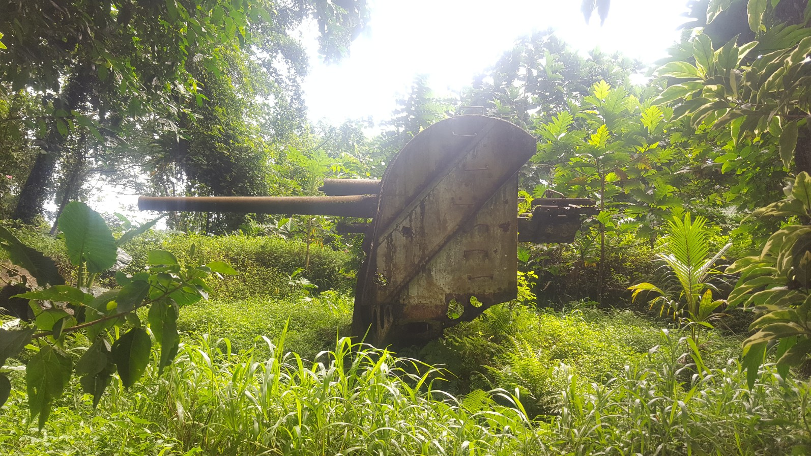

Pohnpei WW2 Photos for Granded
Photo 1: Hiking up Sokehs Island. View out onto other islands and airport.

Photo 2: Japanese cannon in bunker.

Photo 3: Japanese cannon in bunker.

Photo 4: Inside the bunker.

Photo 5: Inside the bunker behind the cannon.

Photo 6: Cannon from above.

Photo 7: Cannon with my hand for scale!

Photo 8: Heading out the back of the bunker into a trench. There were some bats living in here!

Photo 9: Cannon and bunker from outside.

Photo 10: View of where the cannon could fire out on to.

Photo 11: Japanese AA gun.
